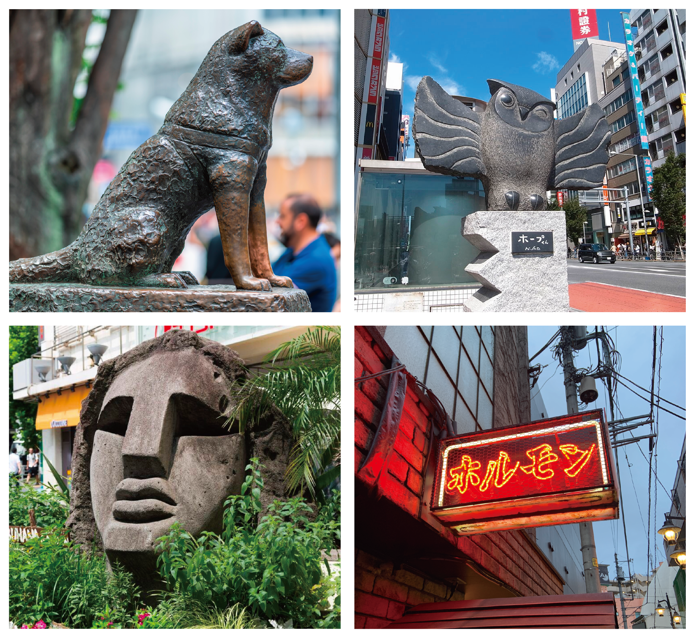
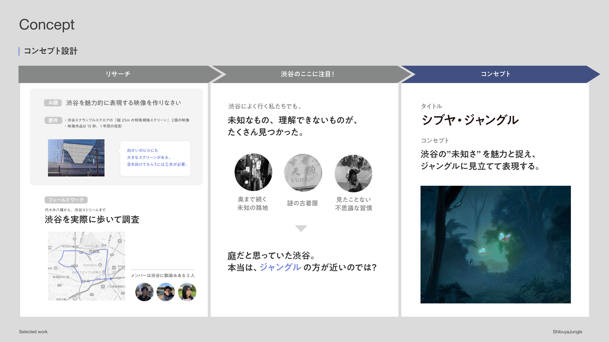
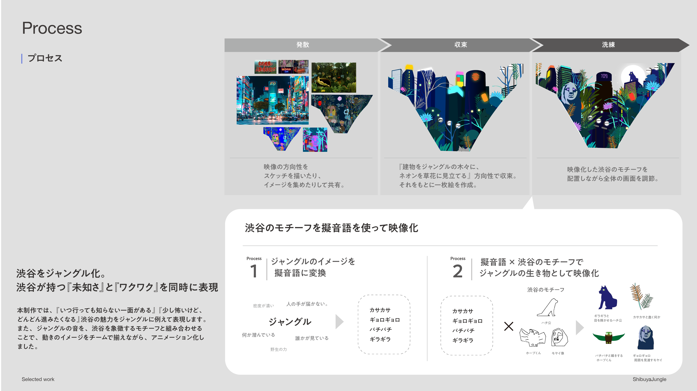
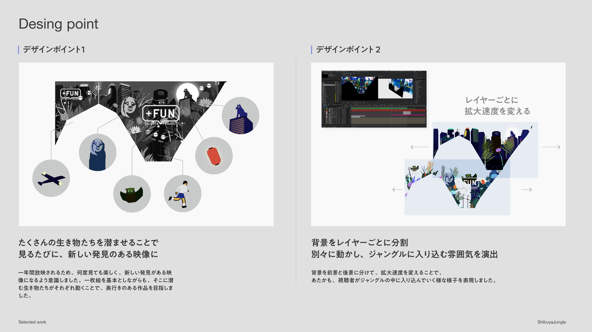
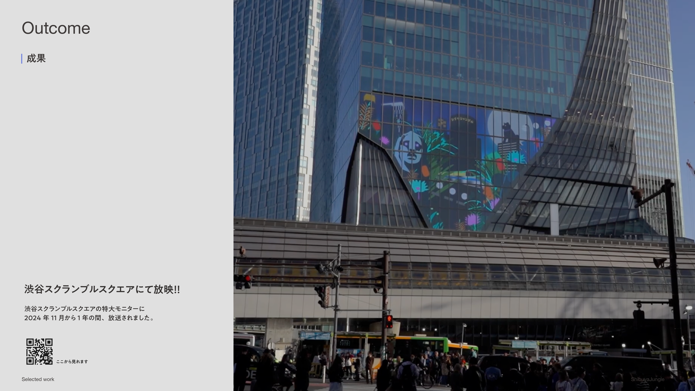
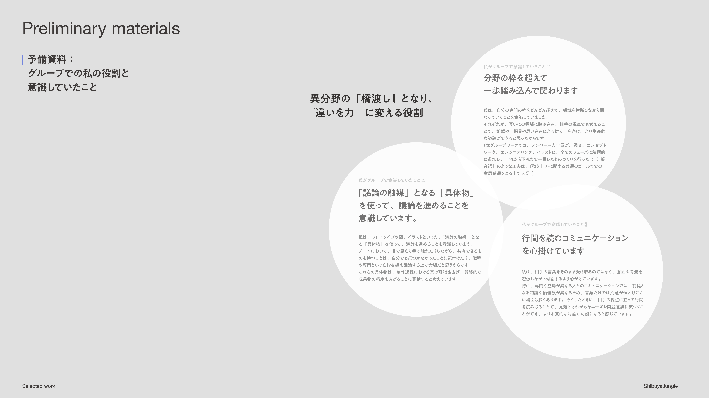
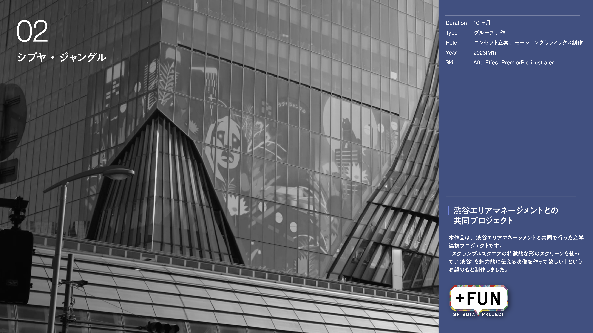

渋谷ジャングル
2024
Member: 3
Design category: motion design / movie
Role: 動画制作
Achievements: Shibuya Scramble Square screen
渋谷の魅力を表現した15秒のモーショングラフィックス
授業内の産学連携プロジェクトで、渋谷スクランブルスクエアで放映する15秒の映像作品を制作しました。フィールドワークから、渋谷の魅力は、『いつ行っても知らない一面がある』『少し怖いけど、どんどん進みたくなる』点にあると考え、渋谷をジャングルに例えて表現しました。渋谷スクランブルスクエアにて放映！！ 渋谷スクランブルスクエアにて放映！！ 渋谷スクランブルスクエアの特大モニターに2024年11月から1年の間、放送されました。